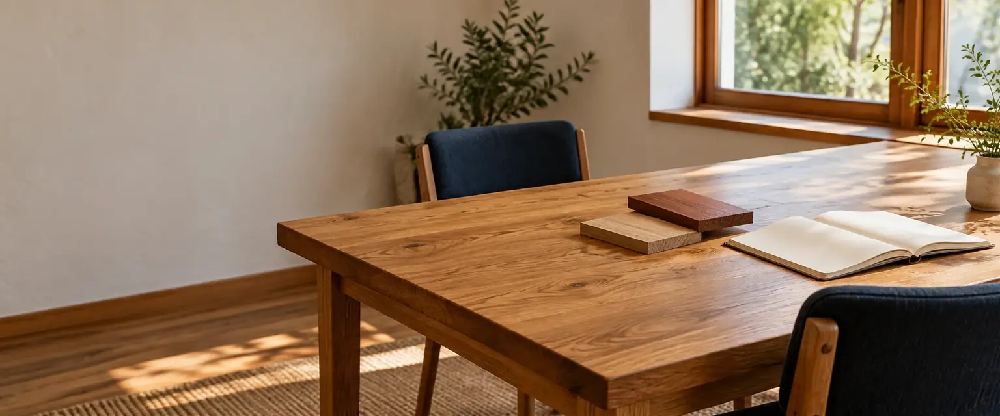

一10の段取り
相談から点検まで。
読み進めると、右の図の家が段階に合わせて組み上がります。
- 費用が決まる地点
- お支払いの時期
- 01
相談約1時間
今の住まいの困りごと、家族の人数、だいたいの予算をうかがい、家づくりの流れと費用の目安をお見せします。
- 決めること
- 住まいの希望、予算の考え方
- 用意するもの
- 気になっていることのメモ
- 02
現地調査約2時間
土地や今の建物を見て、寸法を測ります。リフォームでは床下と屋根裏ものぞきます。
- 決めること
- 立ち会いの日時
- 用意するもの
- 土地の資料（測量図・公図）、今の家の図面があれば
- 03
プラン2〜3回の打ち合わせ
間取りと仕様（窓・床材・設備）を、図面と模型で決めていきます。
- 決めること
- 間取り、窓の位置、設備のグレード
- 用意するもの
- 今の家具の寸法、好きな家の写真
- 04
見積もり約2週間
プランをもとに、項目ごとの見積もりを出します。何を変えるといくら変わるかも、一緒にお見せします。
- 決めること
- 見積もりの項目ごとに、残すか削るか
- 用意するもの
- ほかの会社の見積もり（比べたい方）
- 05
契約約1時間
費用が決まる・契約金（工事費の10%）
見積もりの金額と、工期・支払いの時期を確かめて契約します。この時点で金額が決まります。
- 決めること
- 最終の仕様と金額、工期
- 用意するもの
- 印鑑、本人確認の書類
- 06
着工基礎に約1か月
着工金（工事費の30%）
地鎮祭（希望の方）のあと、基礎をつくり、土台を据えます。
- 決めること
- ご近所へのあいさつの方法
- 用意するもの
- 特になし
- 07
上棟1〜2日
中間金（工事費の30%）
上棟（じょうとう）＝柱と梁を組み上げ、屋根のいちばん上の棟木を載せること。家の形が一日で立ち上がります。
- 決めること
- 上棟の日の立ち会い（任意）
- 用意するもの
- 特になし
- 08
完成約3か月
屋根・壁・内装を仕上げ、社内の検査と、役所の完了検査を受けます。
- 決めること
- 照明やカーテンの最終確認
- 用意するもの
- 家具の搬入日の予定
- 09
引き渡し約2時間
残金（工事費の30%）
お施主さまの立ち会いで最後の確認をし、鍵と、設備の説明書・図面一式をお渡しします。
- 決めること
- 気になる箇所の手直しの有無
- 用意するもの
- 特になし
- 10
点検1年・5年・10年
引き渡しのあとも、同じ会社が点検に伺います。点検は無料です（見本上の設定）。
- 決めること
- 点検の日時
- 用意するもの
- 気になっている箇所のメモ
期間・支払いの割合はすべて見本上の設定です。リフォームの場合は、相談→現地調査→見積もり→契約→工事→引き渡しの6段階で進みます。
二費用が決まる地点と、支払いの時期
金額は契約で決まり、
4回に分けて払います。
見積もりの段階では、項目を削ったり足したりできます。契約で金額が決まり、そのあとの変更は差額を先にお伝えします。
| 時期 | 割合 | この時点で |
|---|---|---|
| 契約 | 10% | 見積もりの金額で、工事費が決まります |
| 着工 | 30% | 基礎の工事を始めます |
| 上棟 | 30% | 骨組みが立ち上がります |
| 引き渡し | 30% | 手直しを終え、鍵をお渡しします |
割合は見本上の設定です。土地代・諸費用は別に、それぞれの支払先へお支払いいただきます。費用はすべて税込で表示します。
三工事中の連絡
現場のことは、
毎週お知らせします。
- 週に一度の報告
- その週の工事の内容と写真を、決めた方法（メール・郵送など）でお送りします。
- 決めてほしいこと
- 現場で決める必要が出たことは、期限と選択肢をそろえてお伝えします。
- 窓口
- 最初から最後まで、同じ現場監督が窓口です。
- 現場の見学
- 工事中はいつでも見学できます。安全のため、前日までにお知らせください。
見本上の設定です。

流れが見えたら、
次は相談の場で。
段取りの説明だけでも大丈夫です。あなたの場合に、どの段階に何か月かかりそうかもお伝えします。
- 相談は無料
- 見積もりは項目ごと
- しつこい営業はしません
いずれも見本上の設定です。写真はAI生成のイメージです。